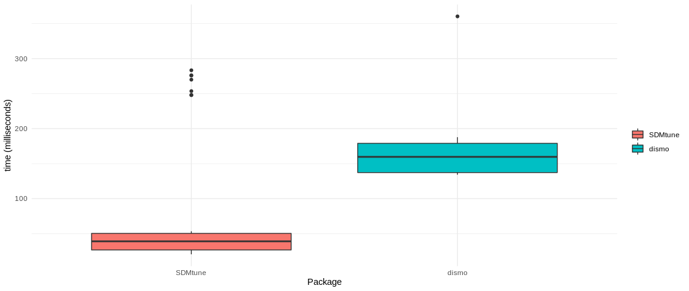

SDMtune provides a user-friendly framework that enables the training and the evaluation of species distribution models (SDMs). The package implements functions for data driven variable selection and model tuning and includes numerous utilities to display the results. All the functions used to select variables or to tune model hyperparameters have an interactive real-time chart displayed in the RStudio viewer pane during their execution. Visit the package website and learn how to use SDMtune starting from the first article Prepare data for the analysis.
Installation
You can install the latest release version from CRAN:
install.packages("SDMtune")Or the development version from GitHub:
devtools::install_github("ConsBiol-unibern/SDMtune")Hyperparameters tuning & real-time charts
SDMtune implements three functions for hyperparameters tuning:
-
gridSearch: runs all the possible combinations of predefined hyperparameters’ values; -
randomSearch: randomly selects a fraction of the possible combinations of predefined hyperparameters’ values; -
optimizeModel: uses a genetic algorithm that aims to optimize the given evaluation metric by combining the predefined hyperparameters’ values.
When the amount of hyperparameters’ combinations is high, the computation time necessary to train all the defined models could be very long. The function optimizeModel offers a valid alternative that reduces computation time thanks to an implemented genetic algorithm. This function seeks the best combination of hyperparameters reaching a near optimal or optimal solution in a reduced amount of time compared to gridSearch. The following code shows an example using a simulated dataset. First a model is trained using the Maxnet algorithm implemented in the maxnet package with default hyperparameters’ values. After the model is trained, both the gridSearch and optimizeModel functions are executed to compare the execution time and model performance evaluated with the AUC metric. If the following code is not clear, please check the articles in the website.
library(SDMtune)
# Acquire environmental variables
files <- list.files(path = file.path(system.file(package = "dismo"), "ex"),
pattern = "grd", full.names = TRUE)
predictors <- raster::stack(files)
# Prepare presence and background locations
p_coords <- virtualSp$presence
bg_coords <- virtualSp$background
# Create SWD object
data <- prepareSWD(species = "Virtual species", p = p_coords, a = bg_coords,
env = predictors, categorical = "biome")
# Split presence locations in training (80%) and testing (20%) datasets
datasets <- trainValTest(data, test = 0.2, only_presence = TRUE, seed = 25)
train <- datasets[[1]]
test <- datasets[[2]]
# Train a Maxnet model
model <- train(method = "Maxnet", data = train)
# Define the hyperparameters to test
h <- list(reg = seq(0.1, 3, 0.1), fc = c("lq", "lh", "lqp", "lqph", "lqpht"))
# Test all the possible combinations with gridSearch
gs <- gridSearch(model, hypers = h, metric = "auc", test = test)
head(gs@results[order(-gs@results$test_AUC), ]) # Best combinations
# Use the genetic algorithm instead with optimizeModel
om <- optimizeModel(model, hypers = h, metric = "auc", test = test, seed = 4)
head(om@results) # Best combinationsDuring the execution of “tuning” and “variable selection” functions, real-time charts displaying training and validation metrics are displayed in the RStudio viewer pane (below is a screencast of the previous executed optimizeModel function).

Speed test
In the following example we train a Maxent model:
# Train a Maxent model
sdmtune_model <- train(method = "Maxent", data = data)We compare the execution time of the predict function between SDMtune that uses its own algorithm and dismo (Hijmans et al. 2017) that calls the MaxEnt Java software (Steven J. Phillips, Anderson, and Schapire 2006). We first convert the object sdmtune_model in a object that is accepted by dismo:
maxent_model <- SDMmodel2MaxEnt(sdmtune_model)Next is a function used below to test if the results are equal, with a tolerance of 1e-7:
Now we test the execution time using the microbenckmark package:
bench <- microbenchmark::microbenchmark(
SDMtune = predict(sdmtune_model, data = data, type = "cloglog"),
dismo = predict(maxent_model, data@data),
check = my_check
)and plot the output:
library(ggplot2)
ggplot(bench, aes(x = expr, y = time/1000000, fill = expr)) +
geom_boxplot() +
labs(fill = "", x = "Package", y = "time (milliseconds)") +
theme_minimal()
Set working environment
To train a Maxent model using the Java implementation you need that:
- the Java JDK software is installed;
- the package rJava is installed;
- the file maxent.jar is copied in the correct folder.
The file maxent.jar can be downloaded here (note that you need MaxEnt version >= 3.4.1 (Steven J. Phillips et al. 2017)). This file must be copied into the right folder to be available for the dismo package (Hijmans et al. 2017): copy the file maxent.jar into the folder named java that is located inside the folder returned by the following command:
system.file(package="dismo")The function checkMaxentInstallation checks that Java JDK and rJava are installed, and that the file maxent.jar is in the correct folder.
If everything is correctly configured for dismo, the following command will return the used MaxEnt version (make sure that the version is >= 3.4.1):
dismo::maxent()Code of conduct
Please note that this project follows a Contributor Code of Conduct. By contributing to this project, you agree to abide by its terms.